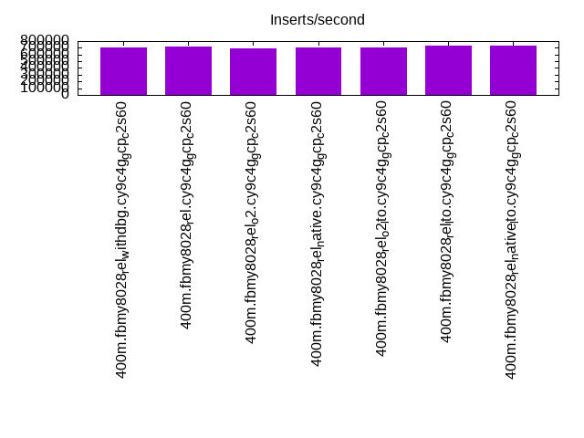
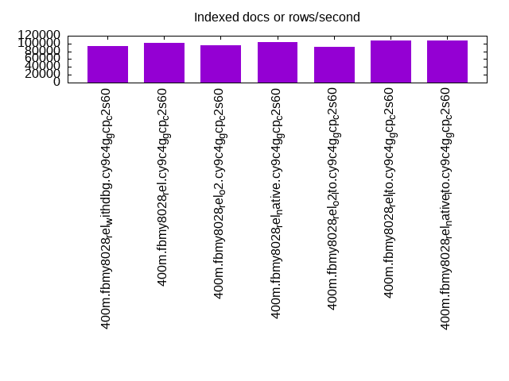
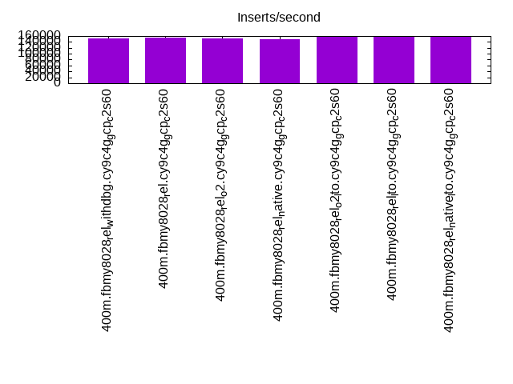
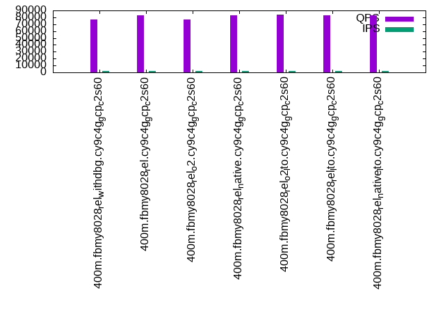
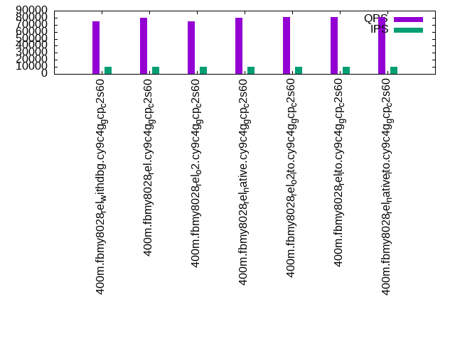
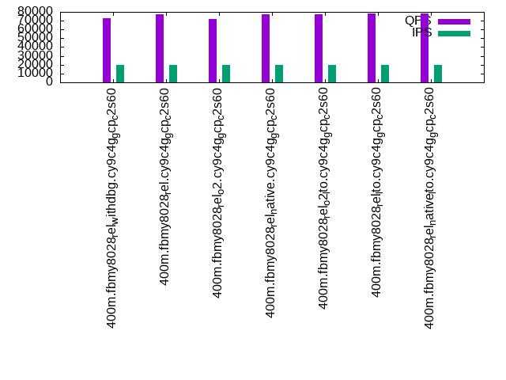

This is a report for the insert benchmark with 400M docs and 20 client(s). It is generated by scripts (bash, awk, sed) and Tufte might not be impressed. An overview of the insert benchmark is here and a short update is here. Below, by DBMS, I mean DBMS+version.config. An example is my8020.c10b40 where my means MySQL, 8020 is version 8.0.20 and c10b40 is the name for the configuration file.
The test server is c2-standard-60 from GCP with 30 cores, hyperthreading disabled, 240G RAM and 3T of NVMe storage. The benchmark was run with 20 clients and there were 1 or 2 connections per client (1 for queries, 1 for inserts). The benchmark loads 400M rows without secondary indexes, creates secondary indexes, loads another 400M rows then does 3 read+write tests for 1800 seconds each that do queries as fast as possible with 100, 500 and then 1000 writes/second/client concurrent with the queries. All clients share one table. The database is cached by the OS page cache but not the storage engine. Clients and the DBMS share one server. The per-database configs are in the per-database subdirectories here.
The tested DBMS are:
The numbers are inserts/s for l.i0 and l.i1, indexed docs (or rows) /s for l.x and queries/s for q*.2. The values are the average rate over the entire test for inserts (IPS) and queries (QPS). The range of values for IPS and QPS is split into 3 parts: bottom 25%, middle 50%, top 25%. Values in the bottom 25% have a red background, values in the top 25% have a green background and values in the middle have no color. A gray background is used for values that can be ignored because the DBMS did not sustain the target insert rate. Red backgrounds are not used when the minimum value is within 80% of the max value.
| dbms | l.i0 | l.x | l.i1 | q100.1 | q500.1 | q1000.1 |
|---|---|---|---|---|---|---|
| 400m.fbmy8028_rel_withdbg.cy9c4g_gcp_c2s60 | 701754 | 93591 | 152555 | 76362 | 74739 | 72426 |
| 400m.fbmy8028_rel.cy9c4g_gcp_c2s60 | 714286 | 102301 | 154261 | 83015 | 80337 | 77027 |
| 400m.fbmy8028_rel_o2.cy9c4g_gcp_c2s60 | 698080 | 94788 | 152497 | 76454 | 74399 | 72145 |
| 400m.fbmy8028_rel_native.cy9c4g_gcp_c2s60 | 705467 | 103841 | 149981 | 82472 | 80282 | 77188 |
| 400m.fbmy8028_rel_o2_lto.cy9c4g_gcp_c2s60 | 704225 | 91977 | 158919 | 83636 | 80676 | 77490 |
| 400m.fbmy8028_rel_lto.cy9c4g_gcp_c2s60 | 731261 | 108311 | 159109 | 83141 | 81121 | 78065 |
| 400m.fbmy8028_rel_native_lto.cy9c4g_gcp_c2s60 | 728597 | 107786 | 159808 | 82778 | 80883 | 77800 |
This table has relative throughput, throughput for the DBMS relative to the DBMS in the first line, using the absolute throughput from the previous table.
| dbms | l.i0 | l.x | l.i1 | q100.1 | q500.1 | q1000.1 |
|---|---|---|---|---|---|---|
| 400m.fbmy8028_rel_withdbg.cy9c4g_gcp_c2s60 | 1.00 | 1.00 | 1.00 | 1.00 | 1.00 | 1.00 |
| 400m.fbmy8028_rel.cy9c4g_gcp_c2s60 | 1.02 | 1.09 | 1.01 | 1.09 | 1.07 | 1.06 |
| 400m.fbmy8028_rel_o2.cy9c4g_gcp_c2s60 | 0.99 | 1.01 | 1.00 | 1.00 | 1.00 | 1.00 |
| 400m.fbmy8028_rel_native.cy9c4g_gcp_c2s60 | 1.01 | 1.11 | 0.98 | 1.08 | 1.07 | 1.07 |
| 400m.fbmy8028_rel_o2_lto.cy9c4g_gcp_c2s60 | 1.00 | 0.98 | 1.04 | 1.10 | 1.08 | 1.07 |
| 400m.fbmy8028_rel_lto.cy9c4g_gcp_c2s60 | 1.04 | 1.16 | 1.04 | 1.09 | 1.09 | 1.08 |
| 400m.fbmy8028_rel_native_lto.cy9c4g_gcp_c2s60 | 1.04 | 1.15 | 1.05 | 1.08 | 1.08 | 1.07 |
This lists the average rate of inserts/s for the tests that do inserts concurrent with queries. For such tests the query rate is listed in the table above. The read+write tests are setup so that the insert rate should match the target rate every second. Cells that are not at least 95% of the target have a red background to indicate a failure to satisfy the target.
| dbms | q100.1 | q500.1 | q1000.1 |
|---|---|---|---|
| fbmy8028_rel_withdbg.cy9c4g_gcp_c2s60 | 1976 | 9885 | 19769 |
| fbmy8028_rel.cy9c4g_gcp_c2s60 | 1976 | 9885 | 19769 |
| fbmy8028_rel_o2.cy9c4g_gcp_c2s60 | 1976 | 9879 | 19769 |
| fbmy8028_rel_native.cy9c4g_gcp_c2s60 | 1976 | 9890 | 19769 |
| fbmy8028_rel_o2_lto.cy9c4g_gcp_c2s60 | 1976 | 9885 | 19769 |
| fbmy8028_rel_lto.cy9c4g_gcp_c2s60 | 1976 | 9890 | 19769 |
| fbmy8028_rel_native_lto.cy9c4g_gcp_c2s60 | 1976 | 9885 | 19769 |
| target | 2000 | 10000 | 20000 |
l.i0: load without secondary indexes. Graphs for performance per 1-second interval are here.
Average throughput:
Insert response time histogram: each cell has the percentage of responses that take <= the time in the header and max is the max response time in seconds. For the max column values in the top 25% of the range have a red background and in the bottom 25% of the range have a green background. The red background is not used when the min value is within 80% of the max value.
| dbms | 256us | 1ms | 4ms | 16ms | 64ms | 256ms | 1s | 4s | 16s | gt | max |
|---|---|---|---|---|---|---|---|---|---|---|---|
| fbmy8028_rel_withdbg.cy9c4g_gcp_c2s60 | 0.300 | 98.567 | 1.091 | 0.006 | 0.036 | 0.250 | |||||
| fbmy8028_rel.cy9c4g_gcp_c2s60 | 0.375 | 98.573 | 1.009 | 0.007 | 0.036 | 0.247 | |||||
| fbmy8028_rel_o2.cy9c4g_gcp_c2s60 | 0.345 | 98.422 | 1.190 | 0.007 | 0.036 | 0.254 | |||||
| fbmy8028_rel_native.cy9c4g_gcp_c2s60 | 0.414 | 98.487 | 1.055 | 0.008 | 0.036 | 0.245 | |||||
| fbmy8028_rel_o2_lto.cy9c4g_gcp_c2s60 | 0.407 | 98.439 | 1.105 | 0.011 | 0.036 | 0.250 | |||||
| fbmy8028_rel_lto.cy9c4g_gcp_c2s60 | 0.680 | 98.536 | 0.741 | 0.006 | 0.036 | 0.245 | |||||
| fbmy8028_rel_native_lto.cy9c4g_gcp_c2s60 | 0.515 | 98.689 | 0.757 | 0.004 | 0.036 | 0.243 |
Performance metrics for the DBMS listed above. Some are normalized by throughput, others are not. Legend for results is here.
ips qps rps rmbps wps wmbps rpq rkbpq wpi wkbpi csps cpups cspq cpupq dbgb1 dbgb2 rss maxop p50 p99 tag 701754 0 0 0.0 444.0 106.7 0.000 0.000 0.001 0.156 128436 44.6 0.183 19 12.6 13.1 1.7 0.250 36860 28270 400m.fbmy8028_rel_withdbg.cy9c4g_gcp_c2s60 714286 0 0 0.0 453.4 109.3 0.000 0.000 0.001 0.157 130508 44.9 0.183 19 12.5 13.1 1.7 0.247 37060 28769 400m.fbmy8028_rel.cy9c4g_gcp_c2s60 698080 0 0 0.0 439.6 105.7 0.000 0.000 0.001 0.155 129139 44.3 0.185 19 12.5 13.0 1.7 0.254 36572 28469 400m.fbmy8028_rel_o2.cy9c4g_gcp_c2s60 705467 0 0 0.0 446.4 107.5 0.000 0.000 0.001 0.156 130839 44.0 0.185 19 12.5 13.0 1.7 0.245 36860 28369 400m.fbmy8028_rel_native.cy9c4g_gcp_c2s60 704225 0 0 0.0 445.9 106.4 0.000 0.000 0.001 0.155 130220 44.4 0.185 19 12.5 13.1 1.7 0.250 36793 28278 400m.fbmy8028_rel_o2_lto.cy9c4g_gcp_c2s60 731261 0 0 0.0 464.8 111.0 0.000 0.000 0.001 0.155 135382 44.1 0.185 18 12.6 13.1 1.7 0.245 38373 29068 400m.fbmy8028_rel_lto.cy9c4g_gcp_c2s60 728597 0 0 0.0 460.1 110.8 0.000 0.000 0.001 0.156 135114 44.6 0.185 18 12.5 13.0 1.7 0.243 38158 29468 400m.fbmy8028_rel_native_lto.cy9c4g_gcp_c2s60
l.x: create secondary indexes.
Average throughput:
Performance metrics for the DBMS listed above. Some are normalized by throughput, others are not. Legend for results is here.
ips qps rps rmbps wps wmbps rpq rkbpq wpi wkbpi csps cpups cspq cpupq dbgb1 dbgb2 rss maxop p50 p99 tag 93591 0 0 0.0 33.5 10.4 0.000 0.000 0.000 0.114 670 2.9 0.007 9 25.4 25.9 6.0 0.003 NA NA 400m.fbmy8028_rel_withdbg.cy9c4g_gcp_c2s60 102301 0 0 0.0 36.3 11.9 0.000 0.000 0.000 0.120 699 2.9 0.007 9 25.3 25.9 6.0 0.003 NA NA 400m.fbmy8028_rel.cy9c4g_gcp_c2s60 94788 0 0 0.0 33.9 10.9 0.000 0.000 0.000 0.118 649 2.9 0.007 9 25.4 25.9 6.0 0.002 NA NA 400m.fbmy8028_rel_o2.cy9c4g_gcp_c2s60 103841 0 0 0.0 36.9 11.5 0.000 0.000 0.000 0.114 719 2.9 0.007 8 25.3 25.9 6.0 0.003 NA NA 400m.fbmy8028_rel_native.cy9c4g_gcp_c2s60 91977 0 0 0.0 32.8 9.9 0.000 0.000 0.000 0.110 671 2.9 0.007 9 25.4 25.9 6.0 0.003 NA NA 400m.fbmy8028_rel_o2_lto.cy9c4g_gcp_c2s60 108311 0 0 0.0 38.8 11.4 0.000 0.000 0.000 0.108 708 2.9 0.007 8 25.3 25.8 6.0 0.002 NA NA 400m.fbmy8028_rel_lto.cy9c4g_gcp_c2s60 107786 0 0 0.0 38.4 11.5 0.000 0.000 0.000 0.109 792 2.9 0.007 8 25.3 25.8 6.0 0.002 NA NA 400m.fbmy8028_rel_native_lto.cy9c4g_gcp_c2s60
l.i1: continue load after secondary indexes created. Graphs for performance per 1-second interval are here.
Average throughput:
Insert response time histogram: each cell has the percentage of responses that take <= the time in the header and max is the max response time in seconds. For the max column values in the top 25% of the range have a red background and in the bottom 25% of the range have a green background. The red background is not used when the min value is within 80% of the max value.
| dbms | 256us | 1ms | 4ms | 16ms | 64ms | 256ms | 1s | 4s | 16s | gt | max |
|---|---|---|---|---|---|---|---|---|---|---|---|
| fbmy8028_rel_withdbg.cy9c4g_gcp_c2s60 | 0.068 | 3.901 | 95.973 | 0.048 | 0.009 | 0.001 | 0.365 | ||||
| fbmy8028_rel.cy9c4g_gcp_c2s60 | 0.039 | 4.105 | 95.799 | 0.045 | 0.011 | 0.001 | 0.397 | ||||
| fbmy8028_rel_o2.cy9c4g_gcp_c2s60 | 0.032 | 3.831 | 96.081 | 0.045 | 0.011 | nonzero | 0.277 | ||||
| fbmy8028_rel_native.cy9c4g_gcp_c2s60 | 0.039 | 3.393 | 96.510 | 0.050 | 0.008 | 0.001 | 0.346 | ||||
| fbmy8028_rel_o2_lto.cy9c4g_gcp_c2s60 | 0.017 | 4.750 | 95.169 | 0.047 | 0.017 | 0.001 | 0.312 | ||||
| fbmy8028_rel_lto.cy9c4g_gcp_c2s60 | 0.052 | 4.966 | 94.929 | 0.038 | 0.014 | 0.001 | 0.404 | ||||
| fbmy8028_rel_native_lto.cy9c4g_gcp_c2s60 | 0.043 | 5.387 | 94.514 | 0.036 | 0.018 | 0.001 | 0.349 |
Performance metrics for the DBMS listed above. Some are normalized by throughput, others are not. Legend for results is here.
ips qps rps rmbps wps wmbps rpq rkbpq wpi wkbpi csps cpups cspq cpupq dbgb1 dbgb2 rss maxop p50 p99 tag 152555 0 12 2.3 482.9 110.7 0.000 0.016 0.003 0.743 141064 32.8 0.925 65 54.6 55.9 4.9 0.365 7642 6595 400m.fbmy8028_rel_withdbg.cy9c4g_gcp_c2s60 154261 0 12 2.4 481.7 111.7 0.000 0.016 0.003 0.741 148161 34.0 0.960 66 55.8 57.1 5.0 0.397 7692 6493 400m.fbmy8028_rel.cy9c4g_gcp_c2s60 152497 0 11 2.4 484.7 111.2 0.000 0.016 0.003 0.747 148037 32.9 0.971 65 56.0 57.1 5.1 0.277 7597 6543 400m.fbmy8028_rel_o2.cy9c4g_gcp_c2s60 149981 0 11 2.3 477.5 110.0 0.000 0.016 0.003 0.751 139965 32.4 0.933 65 52.9 54.1 4.9 0.346 7494 6645 400m.fbmy8028_rel_native.cy9c4g_gcp_c2s60 158919 0 12 2.5 504.0 118.3 0.000 0.016 0.003 0.762 148219 33.9 0.933 64 52.6 53.8 4.9 0.312 7944 6592 400m.fbmy8028_rel_o2_lto.cy9c4g_gcp_c2s60 159109 0 12 2.5 505.2 117.0 0.000 0.016 0.003 0.753 149909 33.4 0.942 63 52.6 53.9 4.9 0.404 7944 6543 400m.fbmy8028_rel_lto.cy9c4g_gcp_c2s60 159808 0 12 2.5 512.3 119.3 0.000 0.016 0.003 0.765 150452 33.2 0.941 62 53.6 54.8 5.1 0.349 7991 6443 400m.fbmy8028_rel_native_lto.cy9c4g_gcp_c2s60
q100.1: range queries with 100 insert/s per client. Graphs for performance per 1-second interval are here.
Average throughput:
Query response time histogram: each cell has the percentage of responses that take <= the time in the header and max is the max response time in seconds. For max values in the top 25% of the range have a red background and in the bottom 25% of the range have a green background. The red background is not used when the min value is within 80% of the max value.
| dbms | 256us | 1ms | 4ms | 16ms | 64ms | 256ms | 1s | 4s | 16s | gt | max |
|---|---|---|---|---|---|---|---|---|---|---|---|
| fbmy8028_rel_withdbg.cy9c4g_gcp_c2s60 | 65.557 | 34.438 | 0.006 | nonzero | 0.013 | ||||||
| fbmy8028_rel.cy9c4g_gcp_c2s60 | 81.913 | 18.084 | 0.003 | nonzero | nonzero | 0.028 | |||||
| fbmy8028_rel_o2.cy9c4g_gcp_c2s60 | 65.791 | 34.205 | 0.005 | nonzero | nonzero | 0.024 | |||||
| fbmy8028_rel_native.cy9c4g_gcp_c2s60 | 81.172 | 18.824 | 0.003 | nonzero | nonzero | 0.016 | |||||
| fbmy8028_rel_o2_lto.cy9c4g_gcp_c2s60 | 82.972 | 17.025 | 0.003 | nonzero | 0.015 | ||||||
| fbmy8028_rel_lto.cy9c4g_gcp_c2s60 | 82.084 | 17.913 | 0.003 | nonzero | nonzero | 0.017 | |||||
| fbmy8028_rel_native_lto.cy9c4g_gcp_c2s60 | 81.609 | 18.388 | 0.003 | nonzero | 0.016 |
Insert response time histogram: each cell has the percentage of responses that take <= the time in the header and max is the max response time in seconds. For max values in the top 25% of the range have a red background and in the bottom 25% of the range have a green background. The red background is not used when the min value is within 80% of the max value.
| dbms | 256us | 1ms | 4ms | 16ms | 64ms | 256ms | 1s | 4s | 16s | gt | max |
|---|---|---|---|---|---|---|---|---|---|---|---|
| fbmy8028_rel_withdbg.cy9c4g_gcp_c2s60 | 89.031 | 10.969 | 0.015 | ||||||||
| fbmy8028_rel.cy9c4g_gcp_c2s60 | 95.472 | 4.528 | 0.010 | ||||||||
| fbmy8028_rel_o2.cy9c4g_gcp_c2s60 | 98.211 | 1.765 | 0.024 | 0.032 | |||||||
| fbmy8028_rel_native.cy9c4g_gcp_c2s60 | 0.004 | 99.519 | 0.476 | 0.012 | |||||||
| fbmy8028_rel_o2_lto.cy9c4g_gcp_c2s60 | 0.004 | 95.511 | 4.485 | 0.014 | |||||||
| fbmy8028_rel_lto.cy9c4g_gcp_c2s60 | 0.008 | 98.647 | 1.344 | 0.008 | |||||||
| fbmy8028_rel_native_lto.cy9c4g_gcp_c2s60 | 0.019 | 99.597 | 0.382 | 0.001 | 0.017 |
Performance metrics for the DBMS listed above. Some are normalized by throughput, others are not. Legend for results is here.
ips qps rps rmbps wps wmbps rpq rkbpq wpi wkbpi csps cpups cspq cpupq dbgb1 dbgb2 rss maxop p50 p99 tag 1976 76362 0 0.0 17.7 2.6 0.000 0.000 0.009 1.324 302918 66.0 3.967 259 52.4 54.1 5.4 0.013 3870 3580 400m.fbmy8028_rel_withdbg.cy9c4g_gcp_c2s60 1976 83015 0 0.0 19.7 3.0 0.000 0.000 0.010 1.531 325452 66.1 3.920 239 52.4 54.1 5.3 0.028 4171 3646 400m.fbmy8028_rel.cy9c4g_gcp_c2s60 1976 76454 0 0.0 19.2 2.9 0.000 0.000 0.010 1.513 300112 66.1 3.925 259 52.4 54.0 5.2 0.024 3869 3547 400m.fbmy8028_rel_o2.cy9c4g_gcp_c2s60 1976 82472 0 0.0 22.6 3.5 0.000 0.000 0.011 1.811 324652 66.1 3.936 240 52.4 54.1 5.6 0.016 4203 3821 400m.fbmy8028_rel_native.cy9c4g_gcp_c2s60 1976 83636 0 0.0 18.9 3.0 0.000 0.000 0.010 1.568 329445 65.8 3.939 236 52.4 54.1 5.6 0.015 4237 3836 400m.fbmy8028_rel_o2_lto.cy9c4g_gcp_c2s60 1976 83141 0 0.0 20.7 3.0 0.000 0.000 0.010 1.576 327907 65.8 3.944 237 52.3 54.0 5.2 0.017 4203 3836 400m.fbmy8028_rel_lto.cy9c4g_gcp_c2s60 1976 82778 0 0.0 23.7 3.7 0.000 0.000 0.012 1.940 323952 66.0 3.913 239 52.3 54.0 5.3 0.016 4171 3804 400m.fbmy8028_rel_native_lto.cy9c4g_gcp_c2s60
q500.1: range queries with 500 insert/s per client. Graphs for performance per 1-second interval are here.
Average throughput:
Query response time histogram: each cell has the percentage of responses that take <= the time in the header and max is the max response time in seconds. For max values in the top 25% of the range have a red background and in the bottom 25% of the range have a green background. The red background is not used when the min value is within 80% of the max value.
| dbms | 256us | 1ms | 4ms | 16ms | 64ms | 256ms | 1s | 4s | 16s | gt | max |
|---|---|---|---|---|---|---|---|---|---|---|---|
| fbmy8028_rel_withdbg.cy9c4g_gcp_c2s60 | 59.231 | 40.739 | 0.029 | 0.001 | nonzero | 0.043 | |||||
| fbmy8028_rel.cy9c4g_gcp_c2s60 | 74.620 | 25.356 | 0.024 | 0.001 | nonzero | 0.024 | |||||
| fbmy8028_rel_o2.cy9c4g_gcp_c2s60 | 58.325 | 41.645 | 0.029 | 0.001 | nonzero | 0.055 | |||||
| fbmy8028_rel_native.cy9c4g_gcp_c2s60 | 74.603 | 25.372 | 0.024 | 0.001 | nonzero | 0.023 | |||||
| fbmy8028_rel_o2_lto.cy9c4g_gcp_c2s60 | 75.684 | 24.291 | 0.024 | 0.001 | nonzero | 0.031 | |||||
| fbmy8028_rel_lto.cy9c4g_gcp_c2s60 | 76.458 | 23.519 | 0.023 | 0.001 | nonzero | 0.042 | |||||
| fbmy8028_rel_native_lto.cy9c4g_gcp_c2s60 | 75.953 | 24.024 | 0.022 | 0.001 | nonzero | 0.049 |
Insert response time histogram: each cell has the percentage of responses that take <= the time in the header and max is the max response time in seconds. For max values in the top 25% of the range have a red background and in the bottom 25% of the range have a green background. The red background is not used when the min value is within 80% of the max value.
| dbms | 256us | 1ms | 4ms | 16ms | 64ms | 256ms | 1s | 4s | 16s | gt | max |
|---|---|---|---|---|---|---|---|---|---|---|---|
| fbmy8028_rel_withdbg.cy9c4g_gcp_c2s60 | 16.327 | 83.189 | 0.483 | 0.030 | |||||||
| fbmy8028_rel.cy9c4g_gcp_c2s60 | 15.661 | 83.887 | 0.453 | 0.029 | |||||||
| fbmy8028_rel_o2.cy9c4g_gcp_c2s60 | 16.419 | 83.112 | 0.469 | 0.063 | |||||||
| fbmy8028_rel_native.cy9c4g_gcp_c2s60 | 0.001 | 15.857 | 83.719 | 0.423 | 0.031 | ||||||
| fbmy8028_rel_o2_lto.cy9c4g_gcp_c2s60 | 0.001 | 15.698 | 83.881 | 0.420 | 0.034 | ||||||
| fbmy8028_rel_lto.cy9c4g_gcp_c2s60 | 0.001 | 17.194 | 82.486 | 0.318 | 0.028 | ||||||
| fbmy8028_rel_native_lto.cy9c4g_gcp_c2s60 | nonzero | 16.435 | 83.221 | 0.344 | 0.031 |
Performance metrics for the DBMS listed above. Some are normalized by throughput, others are not. Legend for results is here.
ips qps rps rmbps wps wmbps rpq rkbpq wpi wkbpi csps cpups cspq cpupq dbgb1 dbgb2 rss maxop p50 p99 tag 9885 74739 0 0.0 50.3 8.6 0.000 0.000 0.005 0.892 292819 67.4 3.918 271 53.6 55.5 5.2 0.043 3789 3468 400m.fbmy8028_rel_withdbg.cy9c4g_gcp_c2s60 9885 80337 0 0.0 50.1 8.7 0.000 0.000 0.005 0.901 314792 67.3 3.918 251 53.5 55.5 5.2 0.024 4091 3710 400m.fbmy8028_rel.cy9c4g_gcp_c2s60 9879 74399 0 0.0 45.5 8.4 0.000 0.000 0.005 0.874 291040 67.2 3.912 271 53.6 55.5 5.3 0.055 3758 3420 400m.fbmy8028_rel_o2.cy9c4g_gcp_c2s60 9890 80282 0 0.0 48.0 7.7 0.000 0.000 0.005 0.802 314473 67.2 3.917 251 53.6 55.6 5.3 0.023 4060 3692 400m.fbmy8028_rel_native.cy9c4g_gcp_c2s60 9885 80676 0 0.0 46.9 8.6 0.000 0.000 0.005 0.892 316351 67.1 3.921 250 53.6 55.6 5.3 0.031 4091 3708 400m.fbmy8028_rel_o2_lto.cy9c4g_gcp_c2s60 9890 81121 0 0.0 44.5 7.9 0.000 0.000 0.005 0.822 318387 67.0 3.925 248 53.5 55.5 5.2 0.042 4139 3771 400m.fbmy8028_rel_lto.cy9c4g_gcp_c2s60 9885 80883 0 0.0 47.8 8.5 0.000 0.000 0.005 0.885 315965 67.1 3.906 249 53.5 55.4 5.3 0.049 4123 3756 400m.fbmy8028_rel_native_lto.cy9c4g_gcp_c2s60
q1000.1: range queries with 1000 insert/s per client. Graphs for performance per 1-second interval are here.
Average throughput:
Query response time histogram: each cell has the percentage of responses that take <= the time in the header and max is the max response time in seconds. For max values in the top 25% of the range have a red background and in the bottom 25% of the range have a green background. The red background is not used when the min value is within 80% of the max value.
| dbms | 256us | 1ms | 4ms | 16ms | 64ms | 256ms | 1s | 4s | 16s | gt | max |
|---|---|---|---|---|---|---|---|---|---|---|---|
| fbmy8028_rel_withdbg.cy9c4g_gcp_c2s60 | 50.502 | 49.449 | 0.048 | 0.001 | nonzero | 0.048 | |||||
| fbmy8028_rel.cy9c4g_gcp_c2s60 | 63.895 | 36.064 | 0.040 | 0.001 | nonzero | 0.037 | |||||
| fbmy8028_rel_o2.cy9c4g_gcp_c2s60 | 49.589 | 50.362 | 0.048 | 0.001 | nonzero | 0.034 | |||||
| fbmy8028_rel_native.cy9c4g_gcp_c2s60 | 64.354 | 35.605 | 0.040 | 0.001 | nonzero | 0.039 | |||||
| fbmy8028_rel_o2_lto.cy9c4g_gcp_c2s60 | 65.289 | 34.671 | 0.040 | 0.001 | nonzero | 0.031 | |||||
| fbmy8028_rel_lto.cy9c4g_gcp_c2s60 | 66.880 | 33.080 | 0.039 | 0.001 | nonzero | 0.029 | |||||
| fbmy8028_rel_native_lto.cy9c4g_gcp_c2s60 | 66.275 | 33.685 | 0.039 | 0.001 | nonzero | 0.034 |
Insert response time histogram: each cell has the percentage of responses that take <= the time in the header and max is the max response time in seconds. For max values in the top 25% of the range have a red background and in the bottom 25% of the range have a green background. The red background is not used when the min value is within 80% of the max value.
| dbms | 256us | 1ms | 4ms | 16ms | 64ms | 256ms | 1s | 4s | 16s | gt | max |
|---|---|---|---|---|---|---|---|---|---|---|---|
| fbmy8028_rel_withdbg.cy9c4g_gcp_c2s60 | 25.244 | 74.238 | 0.518 | 0.037 | |||||||
| fbmy8028_rel.cy9c4g_gcp_c2s60 | 0.005 | 24.452 | 74.948 | 0.594 | 0.038 | ||||||
| fbmy8028_rel_o2.cy9c4g_gcp_c2s60 | nonzero | 25.131 | 74.289 | 0.580 | 0.044 | ||||||
| fbmy8028_rel_native.cy9c4g_gcp_c2s60 | nonzero | 24.385 | 75.004 | 0.610 | 0.035 | ||||||
| fbmy8028_rel_o2_lto.cy9c4g_gcp_c2s60 | 24.359 | 75.094 | 0.547 | 0.039 | |||||||
| fbmy8028_rel_lto.cy9c4g_gcp_c2s60 | 0.007 | 24.907 | 74.639 | 0.448 | 0.047 | ||||||
| fbmy8028_rel_native_lto.cy9c4g_gcp_c2s60 | 0.003 | 25.428 | 74.119 | 0.450 | 0.034 |
Performance metrics for the DBMS listed above. Some are normalized by throughput, others are not. Legend for results is here.
ips qps rps rmbps wps wmbps rpq rkbpq wpi wkbpi csps cpups cspq cpupq dbgb1 dbgb2 rss maxop p50 p99 tag 19769 72426 0 0.0 90.6 17.7 0.000 0.000 0.005 0.917 279725 69.2 3.862 287 55.9 56.5 5.2 0.048 3676 3340 400m.fbmy8028_rel_withdbg.cy9c4g_gcp_c2s60 19769 77027 0 0.0 89.6 17.0 0.000 0.000 0.005 0.883 298249 69.1 3.872 269 56.1 56.7 5.2 0.037 3900 3564 400m.fbmy8028_rel.cy9c4g_gcp_c2s60 19769 72145 0 0.0 84.7 17.7 0.000 0.000 0.004 0.917 277085 69.1 3.841 287 56.0 56.5 5.2 0.034 3628 3325 400m.fbmy8028_rel_o2.cy9c4g_gcp_c2s60 19769 77188 0 0.0 91.6 17.9 0.000 0.000 0.005 0.925 298748 69.2 3.870 269 56.1 56.6 5.3 0.039 3915 3564 400m.fbmy8028_rel_native.cy9c4g_gcp_c2s60 19769 77490 0 0.0 86.1 17.8 0.000 0.000 0.004 0.922 300538 69.0 3.878 267 55.9 56.4 5.2 0.031 3932 3580 400m.fbmy8028_rel_o2_lto.cy9c4g_gcp_c2s60 19769 78065 0 0.0 86.4 18.1 0.000 0.000 0.004 0.938 303623 68.8 3.889 264 55.9 56.4 5.3 0.029 3963 3644 400m.fbmy8028_rel_lto.cy9c4g_gcp_c2s60 19769 77800 0 0.0 88.2 17.9 0.000 0.000 0.004 0.927 299809 68.8 3.854 265 56.2 56.7 5.4 0.034 3933 3596 400m.fbmy8028_rel_native_lto.cy9c4g_gcp_c2s60
l.i0: load without secondary indexes
Performance metrics for all DBMS, not just the ones listed above. Some are normalized by throughput, others are not. Legend for results is here.
ips qps rps rmbps wps wmbps rpq rkbpq wpi wkbpi csps cpups cspq cpupq dbgb1 dbgb2 rss maxop p50 p99 tag 701754 0 0 0.0 444.0 106.7 0.000 0.000 0.001 0.156 128436 44.6 0.183 19 12.6 13.1 1.7 0.250 36860 28270 400m.fbmy8028_rel_withdbg.cy9c4g_gcp_c2s60 714286 0 0 0.0 453.4 109.3 0.000 0.000 0.001 0.157 130508 44.9 0.183 19 12.5 13.1 1.7 0.247 37060 28769 400m.fbmy8028_rel.cy9c4g_gcp_c2s60 698080 0 0 0.0 439.6 105.7 0.000 0.000 0.001 0.155 129139 44.3 0.185 19 12.5 13.0 1.7 0.254 36572 28469 400m.fbmy8028_rel_o2.cy9c4g_gcp_c2s60 705467 0 0 0.0 446.4 107.5 0.000 0.000 0.001 0.156 130839 44.0 0.185 19 12.5 13.0 1.7 0.245 36860 28369 400m.fbmy8028_rel_native.cy9c4g_gcp_c2s60 704225 0 0 0.0 445.9 106.4 0.000 0.000 0.001 0.155 130220 44.4 0.185 19 12.5 13.1 1.7 0.250 36793 28278 400m.fbmy8028_rel_o2_lto.cy9c4g_gcp_c2s60 731261 0 0 0.0 464.8 111.0 0.000 0.000 0.001 0.155 135382 44.1 0.185 18 12.6 13.1 1.7 0.245 38373 29068 400m.fbmy8028_rel_lto.cy9c4g_gcp_c2s60 728597 0 0 0.0 460.1 110.8 0.000 0.000 0.001 0.156 135114 44.6 0.185 18 12.5 13.0 1.7 0.243 38158 29468 400m.fbmy8028_rel_native_lto.cy9c4g_gcp_c2s60
l.x: create secondary indexes
Performance metrics for all DBMS, not just the ones listed above. Some are normalized by throughput, others are not. Legend for results is here.
ips qps rps rmbps wps wmbps rpq rkbpq wpi wkbpi csps cpups cspq cpupq dbgb1 dbgb2 rss maxop p50 p99 tag 93591 0 0 0.0 33.5 10.4 0.000 0.000 0.000 0.114 670 2.9 0.007 9 25.4 25.9 6.0 0.003 NA NA 400m.fbmy8028_rel_withdbg.cy9c4g_gcp_c2s60 102301 0 0 0.0 36.3 11.9 0.000 0.000 0.000 0.120 699 2.9 0.007 9 25.3 25.9 6.0 0.003 NA NA 400m.fbmy8028_rel.cy9c4g_gcp_c2s60 94788 0 0 0.0 33.9 10.9 0.000 0.000 0.000 0.118 649 2.9 0.007 9 25.4 25.9 6.0 0.002 NA NA 400m.fbmy8028_rel_o2.cy9c4g_gcp_c2s60 103841 0 0 0.0 36.9 11.5 0.000 0.000 0.000 0.114 719 2.9 0.007 8 25.3 25.9 6.0 0.003 NA NA 400m.fbmy8028_rel_native.cy9c4g_gcp_c2s60 91977 0 0 0.0 32.8 9.9 0.000 0.000 0.000 0.110 671 2.9 0.007 9 25.4 25.9 6.0 0.003 NA NA 400m.fbmy8028_rel_o2_lto.cy9c4g_gcp_c2s60 108311 0 0 0.0 38.8 11.4 0.000 0.000 0.000 0.108 708 2.9 0.007 8 25.3 25.8 6.0 0.002 NA NA 400m.fbmy8028_rel_lto.cy9c4g_gcp_c2s60 107786 0 0 0.0 38.4 11.5 0.000 0.000 0.000 0.109 792 2.9 0.007 8 25.3 25.8 6.0 0.002 NA NA 400m.fbmy8028_rel_native_lto.cy9c4g_gcp_c2s60
l.i1: continue load after secondary indexes created
Performance metrics for all DBMS, not just the ones listed above. Some are normalized by throughput, others are not. Legend for results is here.
ips qps rps rmbps wps wmbps rpq rkbpq wpi wkbpi csps cpups cspq cpupq dbgb1 dbgb2 rss maxop p50 p99 tag 152555 0 12 2.3 482.9 110.7 0.000 0.016 0.003 0.743 141064 32.8 0.925 65 54.6 55.9 4.9 0.365 7642 6595 400m.fbmy8028_rel_withdbg.cy9c4g_gcp_c2s60 154261 0 12 2.4 481.7 111.7 0.000 0.016 0.003 0.741 148161 34.0 0.960 66 55.8 57.1 5.0 0.397 7692 6493 400m.fbmy8028_rel.cy9c4g_gcp_c2s60 152497 0 11 2.4 484.7 111.2 0.000 0.016 0.003 0.747 148037 32.9 0.971 65 56.0 57.1 5.1 0.277 7597 6543 400m.fbmy8028_rel_o2.cy9c4g_gcp_c2s60 149981 0 11 2.3 477.5 110.0 0.000 0.016 0.003 0.751 139965 32.4 0.933 65 52.9 54.1 4.9 0.346 7494 6645 400m.fbmy8028_rel_native.cy9c4g_gcp_c2s60 158919 0 12 2.5 504.0 118.3 0.000 0.016 0.003 0.762 148219 33.9 0.933 64 52.6 53.8 4.9 0.312 7944 6592 400m.fbmy8028_rel_o2_lto.cy9c4g_gcp_c2s60 159109 0 12 2.5 505.2 117.0 0.000 0.016 0.003 0.753 149909 33.4 0.942 63 52.6 53.9 4.9 0.404 7944 6543 400m.fbmy8028_rel_lto.cy9c4g_gcp_c2s60 159808 0 12 2.5 512.3 119.3 0.000 0.016 0.003 0.765 150452 33.2 0.941 62 53.6 54.8 5.1 0.349 7991 6443 400m.fbmy8028_rel_native_lto.cy9c4g_gcp_c2s60
q100.1: range queries with 100 insert/s per client
Performance metrics for all DBMS, not just the ones listed above. Some are normalized by throughput, others are not. Legend for results is here.
ips qps rps rmbps wps wmbps rpq rkbpq wpi wkbpi csps cpups cspq cpupq dbgb1 dbgb2 rss maxop p50 p99 tag 1976 76362 0 0.0 17.7 2.6 0.000 0.000 0.009 1.324 302918 66.0 3.967 259 52.4 54.1 5.4 0.013 3870 3580 400m.fbmy8028_rel_withdbg.cy9c4g_gcp_c2s60 1976 83015 0 0.0 19.7 3.0 0.000 0.000 0.010 1.531 325452 66.1 3.920 239 52.4 54.1 5.3 0.028 4171 3646 400m.fbmy8028_rel.cy9c4g_gcp_c2s60 1976 76454 0 0.0 19.2 2.9 0.000 0.000 0.010 1.513 300112 66.1 3.925 259 52.4 54.0 5.2 0.024 3869 3547 400m.fbmy8028_rel_o2.cy9c4g_gcp_c2s60 1976 82472 0 0.0 22.6 3.5 0.000 0.000 0.011 1.811 324652 66.1 3.936 240 52.4 54.1 5.6 0.016 4203 3821 400m.fbmy8028_rel_native.cy9c4g_gcp_c2s60 1976 83636 0 0.0 18.9 3.0 0.000 0.000 0.010 1.568 329445 65.8 3.939 236 52.4 54.1 5.6 0.015 4237 3836 400m.fbmy8028_rel_o2_lto.cy9c4g_gcp_c2s60 1976 83141 0 0.0 20.7 3.0 0.000 0.000 0.010 1.576 327907 65.8 3.944 237 52.3 54.0 5.2 0.017 4203 3836 400m.fbmy8028_rel_lto.cy9c4g_gcp_c2s60 1976 82778 0 0.0 23.7 3.7 0.000 0.000 0.012 1.940 323952 66.0 3.913 239 52.3 54.0 5.3 0.016 4171 3804 400m.fbmy8028_rel_native_lto.cy9c4g_gcp_c2s60
q500.1: range queries with 500 insert/s per client
Performance metrics for all DBMS, not just the ones listed above. Some are normalized by throughput, others are not. Legend for results is here.
ips qps rps rmbps wps wmbps rpq rkbpq wpi wkbpi csps cpups cspq cpupq dbgb1 dbgb2 rss maxop p50 p99 tag 9885 74739 0 0.0 50.3 8.6 0.000 0.000 0.005 0.892 292819 67.4 3.918 271 53.6 55.5 5.2 0.043 3789 3468 400m.fbmy8028_rel_withdbg.cy9c4g_gcp_c2s60 9885 80337 0 0.0 50.1 8.7 0.000 0.000 0.005 0.901 314792 67.3 3.918 251 53.5 55.5 5.2 0.024 4091 3710 400m.fbmy8028_rel.cy9c4g_gcp_c2s60 9879 74399 0 0.0 45.5 8.4 0.000 0.000 0.005 0.874 291040 67.2 3.912 271 53.6 55.5 5.3 0.055 3758 3420 400m.fbmy8028_rel_o2.cy9c4g_gcp_c2s60 9890 80282 0 0.0 48.0 7.7 0.000 0.000 0.005 0.802 314473 67.2 3.917 251 53.6 55.6 5.3 0.023 4060 3692 400m.fbmy8028_rel_native.cy9c4g_gcp_c2s60 9885 80676 0 0.0 46.9 8.6 0.000 0.000 0.005 0.892 316351 67.1 3.921 250 53.6 55.6 5.3 0.031 4091 3708 400m.fbmy8028_rel_o2_lto.cy9c4g_gcp_c2s60 9890 81121 0 0.0 44.5 7.9 0.000 0.000 0.005 0.822 318387 67.0 3.925 248 53.5 55.5 5.2 0.042 4139 3771 400m.fbmy8028_rel_lto.cy9c4g_gcp_c2s60 9885 80883 0 0.0 47.8 8.5 0.000 0.000 0.005 0.885 315965 67.1 3.906 249 53.5 55.4 5.3 0.049 4123 3756 400m.fbmy8028_rel_native_lto.cy9c4g_gcp_c2s60
q1000.1: range queries with 1000 insert/s per client
Performance metrics for all DBMS, not just the ones listed above. Some are normalized by throughput, others are not. Legend for results is here.
ips qps rps rmbps wps wmbps rpq rkbpq wpi wkbpi csps cpups cspq cpupq dbgb1 dbgb2 rss maxop p50 p99 tag 19769 72426 0 0.0 90.6 17.7 0.000 0.000 0.005 0.917 279725 69.2 3.862 287 55.9 56.5 5.2 0.048 3676 3340 400m.fbmy8028_rel_withdbg.cy9c4g_gcp_c2s60 19769 77027 0 0.0 89.6 17.0 0.000 0.000 0.005 0.883 298249 69.1 3.872 269 56.1 56.7 5.2 0.037 3900 3564 400m.fbmy8028_rel.cy9c4g_gcp_c2s60 19769 72145 0 0.0 84.7 17.7 0.000 0.000 0.004 0.917 277085 69.1 3.841 287 56.0 56.5 5.2 0.034 3628 3325 400m.fbmy8028_rel_o2.cy9c4g_gcp_c2s60 19769 77188 0 0.0 91.6 17.9 0.000 0.000 0.005 0.925 298748 69.2 3.870 269 56.1 56.6 5.3 0.039 3915 3564 400m.fbmy8028_rel_native.cy9c4g_gcp_c2s60 19769 77490 0 0.0 86.1 17.8 0.000 0.000 0.004 0.922 300538 69.0 3.878 267 55.9 56.4 5.2 0.031 3932 3580 400m.fbmy8028_rel_o2_lto.cy9c4g_gcp_c2s60 19769 78065 0 0.0 86.4 18.1 0.000 0.000 0.004 0.938 303623 68.8 3.889 264 55.9 56.4 5.3 0.029 3963 3644 400m.fbmy8028_rel_lto.cy9c4g_gcp_c2s60 19769 77800 0 0.0 88.2 17.9 0.000 0.000 0.004 0.927 299809 68.8 3.854 265 56.2 56.7 5.4 0.034 3933 3596 400m.fbmy8028_rel_native_lto.cy9c4g_gcp_c2s60
Insert response time histogram
256us 1ms 4ms 16ms 64ms 256ms 1s 4s 16s gt max tag 0.000 0.300 98.567 1.091 0.006 0.036 0.000 0.000 0.000 0.000 0.250 fbmy8028_rel_withdbg.cy9c4g_gcp_c2s60 0.000 0.375 98.573 1.009 0.007 0.036 0.000 0.000 0.000 0.000 0.247 fbmy8028_rel.cy9c4g_gcp_c2s60 0.000 0.345 98.422 1.190 0.007 0.036 0.000 0.000 0.000 0.000 0.254 fbmy8028_rel_o2.cy9c4g_gcp_c2s60 0.000 0.414 98.487 1.055 0.008 0.036 0.000 0.000 0.000 0.000 0.245 fbmy8028_rel_native.cy9c4g_gcp_c2s60 0.000 0.407 98.439 1.105 0.011 0.036 0.000 0.000 0.000 0.000 0.250 fbmy8028_rel_o2_lto.cy9c4g_gcp_c2s60 0.000 0.680 98.536 0.741 0.006 0.036 0.000 0.000 0.000 0.000 0.245 fbmy8028_rel_lto.cy9c4g_gcp_c2s60 0.000 0.515 98.689 0.757 0.004 0.036 0.000 0.000 0.000 0.000 0.243 fbmy8028_rel_native_lto.cy9c4g_gcp_c2s60
TODO - determine whether there is data for create index response time
Insert response time histogram
256us 1ms 4ms 16ms 64ms 256ms 1s 4s 16s gt max tag 0.000 0.068 3.901 95.973 0.048 0.009 0.001 0.000 0.000 0.000 0.365 fbmy8028_rel_withdbg.cy9c4g_gcp_c2s60 0.000 0.039 4.105 95.799 0.045 0.011 0.001 0.000 0.000 0.000 0.397 fbmy8028_rel.cy9c4g_gcp_c2s60 0.000 0.032 3.831 96.081 0.045 0.011 nonzero 0.000 0.000 0.000 0.277 fbmy8028_rel_o2.cy9c4g_gcp_c2s60 0.000 0.039 3.393 96.510 0.050 0.008 0.001 0.000 0.000 0.000 0.346 fbmy8028_rel_native.cy9c4g_gcp_c2s60 0.000 0.017 4.750 95.169 0.047 0.017 0.001 0.000 0.000 0.000 0.312 fbmy8028_rel_o2_lto.cy9c4g_gcp_c2s60 0.000 0.052 4.966 94.929 0.038 0.014 0.001 0.000 0.000 0.000 0.404 fbmy8028_rel_lto.cy9c4g_gcp_c2s60 0.000 0.043 5.387 94.514 0.036 0.018 0.001 0.000 0.000 0.000 0.349 fbmy8028_rel_native_lto.cy9c4g_gcp_c2s60
Query response time histogram
256us 1ms 4ms 16ms 64ms 256ms 1s 4s 16s gt max tag 65.557 34.438 0.006 nonzero 0.000 0.000 0.000 0.000 0.000 0.000 0.013 fbmy8028_rel_withdbg.cy9c4g_gcp_c2s60 81.913 18.084 0.003 nonzero nonzero 0.000 0.000 0.000 0.000 0.000 0.028 fbmy8028_rel.cy9c4g_gcp_c2s60 65.791 34.205 0.005 nonzero nonzero 0.000 0.000 0.000 0.000 0.000 0.024 fbmy8028_rel_o2.cy9c4g_gcp_c2s60 81.172 18.824 0.003 nonzero nonzero 0.000 0.000 0.000 0.000 0.000 0.016 fbmy8028_rel_native.cy9c4g_gcp_c2s60 82.972 17.025 0.003 nonzero 0.000 0.000 0.000 0.000 0.000 0.000 0.015 fbmy8028_rel_o2_lto.cy9c4g_gcp_c2s60 82.084 17.913 0.003 nonzero nonzero 0.000 0.000 0.000 0.000 0.000 0.017 fbmy8028_rel_lto.cy9c4g_gcp_c2s60 81.609 18.388 0.003 nonzero 0.000 0.000 0.000 0.000 0.000 0.000 0.016 fbmy8028_rel_native_lto.cy9c4g_gcp_c2s60
Insert response time histogram
256us 1ms 4ms 16ms 64ms 256ms 1s 4s 16s gt max tag 0.000 0.000 89.031 10.969 0.000 0.000 0.000 0.000 0.000 0.000 0.015 fbmy8028_rel_withdbg.cy9c4g_gcp_c2s60 0.000 0.000 95.472 4.528 0.000 0.000 0.000 0.000 0.000 0.000 0.010 fbmy8028_rel.cy9c4g_gcp_c2s60 0.000 0.000 98.211 1.765 0.024 0.000 0.000 0.000 0.000 0.000 0.032 fbmy8028_rel_o2.cy9c4g_gcp_c2s60 0.000 0.004 99.519 0.476 0.000 0.000 0.000 0.000 0.000 0.000 0.012 fbmy8028_rel_native.cy9c4g_gcp_c2s60 0.000 0.004 95.511 4.485 0.000 0.000 0.000 0.000 0.000 0.000 0.014 fbmy8028_rel_o2_lto.cy9c4g_gcp_c2s60 0.000 0.008 98.647 1.344 0.000 0.000 0.000 0.000 0.000 0.000 0.008 fbmy8028_rel_lto.cy9c4g_gcp_c2s60 0.000 0.019 99.597 0.382 0.001 0.000 0.000 0.000 0.000 0.000 0.017 fbmy8028_rel_native_lto.cy9c4g_gcp_c2s60
Query response time histogram
256us 1ms 4ms 16ms 64ms 256ms 1s 4s 16s gt max tag 59.231 40.739 0.029 0.001 nonzero 0.000 0.000 0.000 0.000 0.000 0.043 fbmy8028_rel_withdbg.cy9c4g_gcp_c2s60 74.620 25.356 0.024 0.001 nonzero 0.000 0.000 0.000 0.000 0.000 0.024 fbmy8028_rel.cy9c4g_gcp_c2s60 58.325 41.645 0.029 0.001 nonzero 0.000 0.000 0.000 0.000 0.000 0.055 fbmy8028_rel_o2.cy9c4g_gcp_c2s60 74.603 25.372 0.024 0.001 nonzero 0.000 0.000 0.000 0.000 0.000 0.023 fbmy8028_rel_native.cy9c4g_gcp_c2s60 75.684 24.291 0.024 0.001 nonzero 0.000 0.000 0.000 0.000 0.000 0.031 fbmy8028_rel_o2_lto.cy9c4g_gcp_c2s60 76.458 23.519 0.023 0.001 nonzero 0.000 0.000 0.000 0.000 0.000 0.042 fbmy8028_rel_lto.cy9c4g_gcp_c2s60 75.953 24.024 0.022 0.001 nonzero 0.000 0.000 0.000 0.000 0.000 0.049 fbmy8028_rel_native_lto.cy9c4g_gcp_c2s60
Insert response time histogram
256us 1ms 4ms 16ms 64ms 256ms 1s 4s 16s gt max tag 0.000 0.000 16.327 83.189 0.483 0.000 0.000 0.000 0.000 0.000 0.030 fbmy8028_rel_withdbg.cy9c4g_gcp_c2s60 0.000 0.000 15.661 83.887 0.453 0.000 0.000 0.000 0.000 0.000 0.029 fbmy8028_rel.cy9c4g_gcp_c2s60 0.000 0.000 16.419 83.112 0.469 0.000 0.000 0.000 0.000 0.000 0.063 fbmy8028_rel_o2.cy9c4g_gcp_c2s60 0.000 0.001 15.857 83.719 0.423 0.000 0.000 0.000 0.000 0.000 0.031 fbmy8028_rel_native.cy9c4g_gcp_c2s60 0.000 0.001 15.698 83.881 0.420 0.000 0.000 0.000 0.000 0.000 0.034 fbmy8028_rel_o2_lto.cy9c4g_gcp_c2s60 0.000 0.001 17.194 82.486 0.318 0.000 0.000 0.000 0.000 0.000 0.028 fbmy8028_rel_lto.cy9c4g_gcp_c2s60 0.000 nonzero 16.435 83.221 0.344 0.000 0.000 0.000 0.000 0.000 0.031 fbmy8028_rel_native_lto.cy9c4g_gcp_c2s60
Query response time histogram
256us 1ms 4ms 16ms 64ms 256ms 1s 4s 16s gt max tag 50.502 49.449 0.048 0.001 nonzero 0.000 0.000 0.000 0.000 0.000 0.048 fbmy8028_rel_withdbg.cy9c4g_gcp_c2s60 63.895 36.064 0.040 0.001 nonzero 0.000 0.000 0.000 0.000 0.000 0.037 fbmy8028_rel.cy9c4g_gcp_c2s60 49.589 50.362 0.048 0.001 nonzero 0.000 0.000 0.000 0.000 0.000 0.034 fbmy8028_rel_o2.cy9c4g_gcp_c2s60 64.354 35.605 0.040 0.001 nonzero 0.000 0.000 0.000 0.000 0.000 0.039 fbmy8028_rel_native.cy9c4g_gcp_c2s60 65.289 34.671 0.040 0.001 nonzero 0.000 0.000 0.000 0.000 0.000 0.031 fbmy8028_rel_o2_lto.cy9c4g_gcp_c2s60 66.880 33.080 0.039 0.001 nonzero 0.000 0.000 0.000 0.000 0.000 0.029 fbmy8028_rel_lto.cy9c4g_gcp_c2s60 66.275 33.685 0.039 0.001 nonzero 0.000 0.000 0.000 0.000 0.000 0.034 fbmy8028_rel_native_lto.cy9c4g_gcp_c2s60
Insert response time histogram
256us 1ms 4ms 16ms 64ms 256ms 1s 4s 16s gt max tag 0.000 0.000 25.244 74.238 0.518 0.000 0.000 0.000 0.000 0.000 0.037 fbmy8028_rel_withdbg.cy9c4g_gcp_c2s60 0.000 0.005 24.452 74.948 0.594 0.000 0.000 0.000 0.000 0.000 0.038 fbmy8028_rel.cy9c4g_gcp_c2s60 0.000 nonzero 25.131 74.289 0.580 0.000 0.000 0.000 0.000 0.000 0.044 fbmy8028_rel_o2.cy9c4g_gcp_c2s60 0.000 nonzero 24.385 75.004 0.610 0.000 0.000 0.000 0.000 0.000 0.035 fbmy8028_rel_native.cy9c4g_gcp_c2s60 0.000 0.000 24.359 75.094 0.547 0.000 0.000 0.000 0.000 0.000 0.039 fbmy8028_rel_o2_lto.cy9c4g_gcp_c2s60 0.000 0.007 24.907 74.639 0.448 0.000 0.000 0.000 0.000 0.000 0.047 fbmy8028_rel_lto.cy9c4g_gcp_c2s60 0.000 0.003 25.428 74.119 0.450 0.000 0.000 0.000 0.000 0.000 0.034 fbmy8028_rel_native_lto.cy9c4g_gcp_c2s60